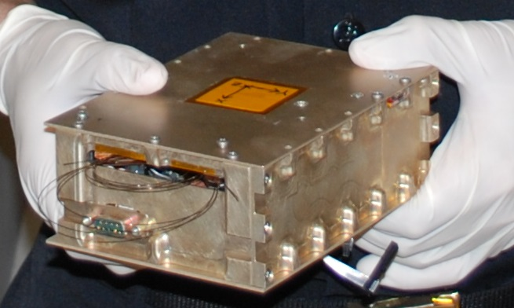
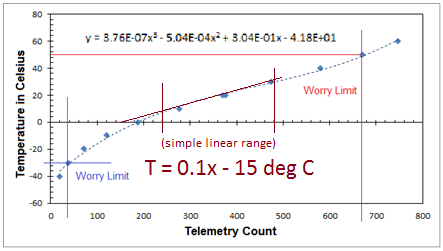
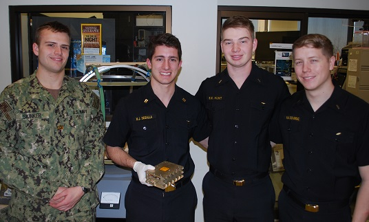
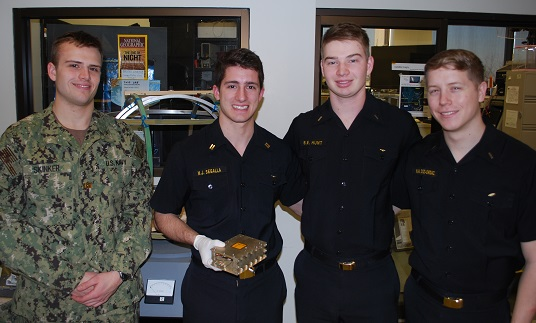
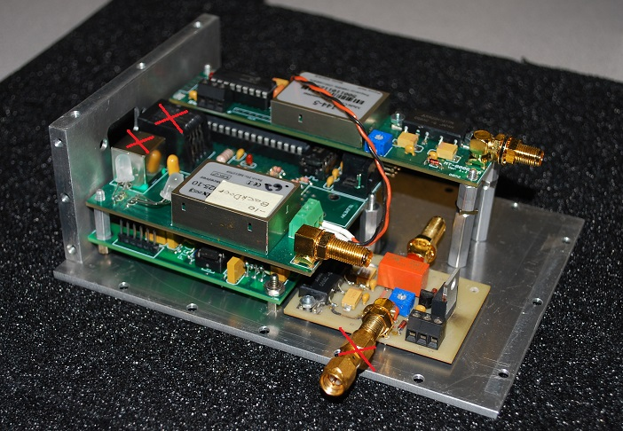
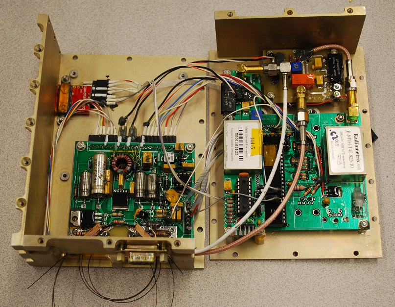
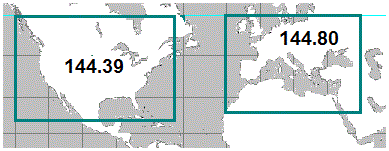
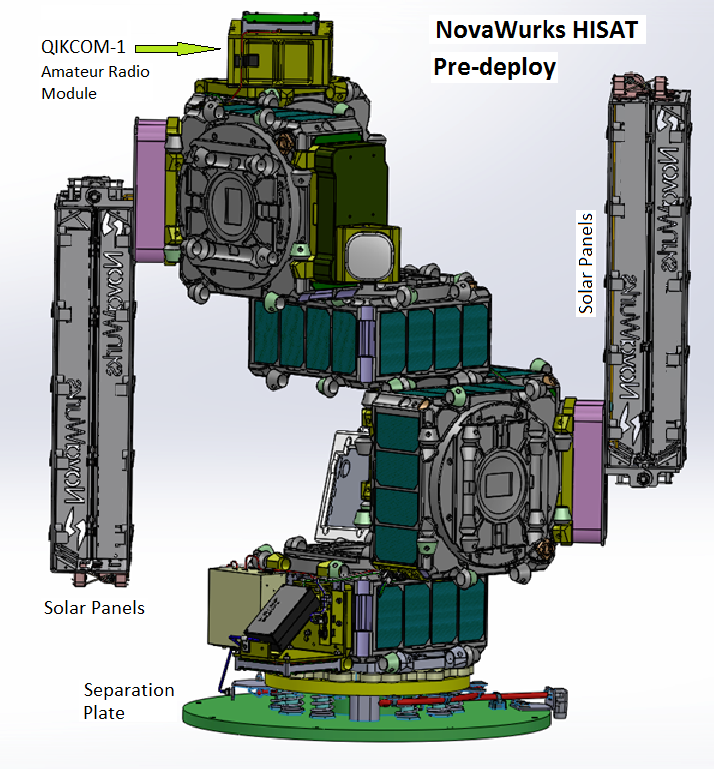
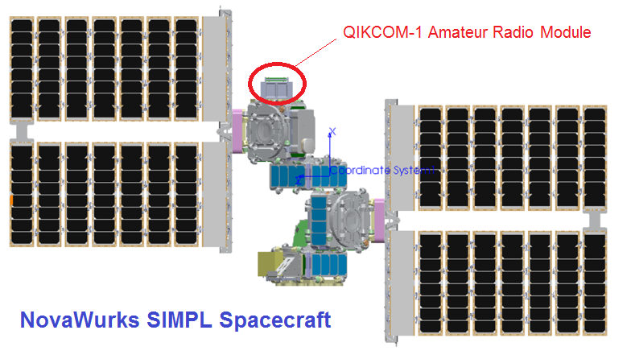

QIKCOM-1 - Deployed from ISS on 27 Oct 2017
APRS User Data and Text Messaging Transponder
Bob Bruninga, WB4APR, Instructor, US Naval Academy,(last name at usna dot edu)
Todd Bruner, WB1HAI, Student Mentor and Control Operator (EX USNA Div Dir 1994/98)
Midshipmen students: Skinker(2015), Segalla(15), Hunt(15), Diasordaz(15)
Frequency: . . . 145.825 1200 baud AFSK
Digipath Alias: APRSAT
DEPLOYMENT: The host spacecraft was deployed from ISS at 0915 UTC over Europe but heading into eclipse. It probably deployed its solar panels 30 minutes later while still in the dark. The QIKCOM-1 module would not get powered up until the Host spacecraft determines it has good, stable power. Nothing was heard on first pass over the USA but it was just coming into sun for first time since it was built 2.5 years ago, and may not yet have decided it has stable power. Subsequent passes and we are still monitoring...
OPERATIONS TEST: To test the uplink quality we asked that all participating users include a special STATUS text in their uplink to indicate the transmit power and antenna gain. Nominally they were to transmit no more often than once a minute and only WHILE ATTENDED. For QIKCOM-1 the requested digipeater path
was to only use the alias of APRSAT so as to not also bring up the ISS digipeater until after they well separate. Here are some example Status texts:
TX 5W HT rubber duck, or
TX 5W HT 19" whip, or
TX 5W HT handheld beam, or
K4KDR-6...QIKCOM-1 test 10w :: 2m X-Quad
N1PEB TX 5W THD74 ELK^
WN9Q...5w 14el klm cross yagi
K3RLD-1...WELCOME QIKCOM-1! 10W D710G ARROW FN20=
ARISS TEST REPORT: Having heard no packets yet from QIKCOM-1 for the last East coast pass of the day, we asked users to return
to using the ARISS path and we used the time to collect statistics on the ISS digipeater instead. During the four minute pass, we heard 11 stations out of about 30 packets heard by our Oscar class ground station. The APRS-IS heard about the same number of packets and same stations from a total of 8 Igates with four of them getting 4 to 6 packets each and the other four contributing 1 or 2 packets each. We also had 5 students with HT's outdoors and they captured from 2 to 4 stations each out of 5 of the same stations in the middle of the pass. But the ISS did not hear any of them with their omni whip antennas at only 5 watts. Of the other stations, the only ones heard were running at least 5 to 10 watts into a modest beams.
This might be the Last Naval Academy Amateur Student Project (of 10)?: The AirForce responsible for the DoD Space Test Program has told the Naval Academy they will no longer accept any Amateur Radio student educational/experiment/projects for launch even though low cost self training and education is one of the primary values of Amateur Radio. As a result, our next several student cubesats are in limbo, and the student design begun in 2016, HFSAT was not allowed to brief this year for any potential future DoD launches. Stay tuned...
QIKCOM-1 Project Summary: The Ham Radio QIKCOM-1 module built by students at the Naval Academy and attached to the
NovaWurks NanoRacks SIMPL spacecraft was designed to complement the existing ISS packet radio digipeater by relaying packets addressed via ARISS or APRSAT, the module was also a pathfinder to be followed by other much more capable modules this year such as QIKCOM-2 which has an additional APRS DTMF uplink and Voice synthesizer downlink. NOTICE: We have TWO flight units of QIKCOM-2 and welcome any other flight opportunity anyone can find!
BEACON EXPERIMENT: The unique experiment on QIKCOM-1 was its terrestrial beacon to be turned on by GPS over North America on the terrestrial mobile frequency of 144.39 and over Europe on 144.80 MHz. Just like any mobile on the national APRS frequencies, the once a minute beacon under the callsign of QIKCOM-11 would alert mobile APRS operators that the satellite was in view. It would know it was over the USA or Europe by monitoring the GPS signal from the Host spacecraft. The STATUS text would say "145.825MHz QSY 4 OPS " telling mobile operators that the spacecraft is in view and all they have to do is QSY to 145.825 to operate it during the next 5 minutes. In most new APRS radios, the QSY or TUNE button would them make this a one-button operation to give more APRS operators the experience with satellites!
Note: QIKCOM-1 was
coordinated
by the IARU for this un-conventional terrerstrial beacon experiment in Nov 2014 before the IARU changed its policy in 2016 to not coordinate any operations outside of the satellite sub band between 145.8 and 146.0. Fortunately, the mission is short lived because it is attached to a large spacecraft with high drag from the low altitude of the ISS.

DOWNLINK: Just like the ISS user packets show up on www.ariss.net the QIKCOM-1 downlink will show up on the www.pcsat.findu.com and on
SAT-REPORTER where all other APRS satellite data is collected from IGates around the world.
TELEMETRY: Due to the short fuse opportunity, we simply used the 5 analog channel telemetry packet that is included in the Byonics MTT4 radio module for simple health parameters as listed here. The critical values will be the temperatures. QIKCOM-1 is exposed directly to space and has no control over its temperature. It can get extremely cold or extremly hot depending on which direction the SIMPL spacecraft is pointing. Watching the Beacon Transmitter temperatures which will be exciting!
Format: T#SSS,CH1,CH2,CH3,CH4,CH5,X000X000 - Where
CH1 - System voltage from the host (28 volts in tenths)
CH2 - System current in Milliamps
CH3 - Beacon supply Voltage (12 volts in tenths)
CH4 - Bottom Temperature (attached to Host spacecraft) equation at right ==>
CH5 - Beacon Transmit Power Amp Temerpature (closest to top plate) equation at right ==>
xxxx1xxx - USA beacon is enabled, 1xxx1xxx - European beacon is enabled
QIKCOM-1 was supposed to be a very quick reaction student built amateur radio relay module to take advantage of a flight opportunity as an attached amateur radio payload to the Novawurks
SIMPL spacecraft
for launch from ISS. Although the students finished the module in one semester and delivered it in the spring of 2015 and it was launched to the ISS in December 2015, it was held from release due to a SNAFU with the FCC over radio licensing. The problem appeared to be the SIMPL spacecraft (host) comms on S-band was licensed under an STA from the FCC as an experimental license and it appeared that the FCC was concerned that students at a Federal Academy could not fly an independent Amateur Radio module under FCC rules and had to go via the NTIA even though its design and mission and objectives are 100% amateur. The resolution was to add the Amateur Frequencies to the
NovaWurks STA
in parallel with the Amateur API Notice filed by our QIKCOM1 control operator, WB1HAI.
Filling the APRS Constellation: Now that the ISS digipeating has resumed operation on 145.825 MHz VHF (after the
late October 2016
failure and switch to UHF), users will now have the opportunity to enjoy double the access times as both the ISS digipeater and QIKCOM-1 will both support the same user uplink path VIA ARISS used on 145.825. (...and possibly the launch of
QIKCOM-2 also this year filling the constellation to maybe 4 satellites at the same time!).
 Dual Hop Experiments:
Since the uplink and digipeated downlink are on the same 145.825 MHz simplex channel, radio amateurs might find it possible to do dual-hop communication. But due to all the congestion on the channel, this will likely only be possible when one spacecraft is over users, and the other is thousands of miles away over an ocean with virtually no users in its footprint to clog its receiver. Once they drift about 1000 miles apart, then a 2 hop path of ARISS,ARISS might be heard by a very distant remote individual still in the fooprint of that second isolated digi. This direction has an order of magnitude better probability of success than expecting for the digi over the populated area to hear the other one. Therefore, coastal stations should listen closely for dual hop packets before the spacecraft sees too many users, such as the success seen several years ago using PCSAT-1 and 2 as shown here.
Dual Hop Experiments:
Since the uplink and digipeated downlink are on the same 145.825 MHz simplex channel, radio amateurs might find it possible to do dual-hop communication. But due to all the congestion on the channel, this will likely only be possible when one spacecraft is over users, and the other is thousands of miles away over an ocean with virtually no users in its footprint to clog its receiver. Once they drift about 1000 miles apart, then a 2 hop path of ARISS,ARISS might be heard by a very distant remote individual still in the fooprint of that second isolated digi. This direction has an order of magnitude better probability of success than expecting for the digi over the populated area to hear the other one. Therefore, coastal stations should listen closely for dual hop packets before the spacecraft sees too many users, such as the success seen several years ago using PCSAT-1 and 2 as shown here.
Recognizing dual-hop packets: The digipeaters on ISS and on QIKCOM-1 have slightly different ways of indicating a successful digipeat. The ISS does path-callsign-substitution and replaces the uplink ARISS path with the ISS callsign RS0ISS and marks it with a (*). Conversly, the QIKCOM-1 module does callsign-insertion and so it inserts its callsign in front of the ARISS alias that was used and marks that alias with a (*). As a result, there are the two ways that a dual hop packet might appear:
A3GGW-2]CQ,QIKCOM-1,ARISS,RS0ISS*,qAO,ESAJ-2::CQ :Hello! 73! . . <-- via Q1 first, then ISS
A3GGW-2]CQ,RS0ISS,QIKCOM-1,ARISS*,qAO,ESAJ-2::CQ :Hello! 73! . . <-- Via ISS first, then Q1
Capturing the packets:
In addition to live monitoring the downlink by individuals everywhere, amateurs can also check the live downlink web pages daily looking for dual hops captured by our worldwide APRS internet linked ground station network:
packets relayed by ARISS on the ISS captured by FINDU.COM
packets relayed by QIKCOM-1 and other APRS satellites captured by FINDU.COM
packets captured by SAT-REPORTER
This transponder will join a number of Networked APRS transponders operating in the Amateur Satellite Service that are, or will be, on Orbit in 2017 and all will appear on the live web pages above.
OUTNET a global APRS channel on 3 GEO satellites!
FALCONSAT3 an AirForce Academy satellite turned over to APRS use in 2017
PCsat-1 in orbit since 2001 semi-operational
ARISS on the ISS since 2007
PSAT Operational May 2015
BRICSAT-1 launched with PSAT, but insufficient power budget
QIKCOM-1 with terrestrial APRS alert beacon on ISS, awaiting astronaut deployment
QIKCOM-2 with APRStt (TouchTone uplink and Voice downlink) for launch late 2016
PSAT2 To be Launched spring of 2018
BRICSAT-2 To be Launched spring of 2018
HFSAT a linear 24/29 MHz transponder [pulled. AirForce has ordered no more Academy Amateur Satellites]
ASTARS missions: Prior APRS missions on other spacecraft, ISS, Shuttle and MIR
Please see the IARU Coordination Letter
and how it fits
in the Amateur Satellite Service
and also the FCC Public Notice
rules for operating in the Amateur Satellite Service.
 .

.


OVERVIEW: . QIKcom-1 is an amateur radio module built by a group of students as their senior project at the Naval Academy to take advantage of a launch opportunity offered by a spacecraft integrator (NovaWurks). The module was delivered on 2 March 2015 and
launched to ISS on 9 Dec 2015 as an attached module to
the SIMPL Host spacecraft. The spacecraft is awaiting clearance from the FCC prior to deployment. It was
a very short fuse flight opportunity so students took as much that we had that was already
developed for previous APRS amateur radio transponders and since it flies on a host spacecraft, we get 28v power and did not need to develop solar panels or an attitude control system. It
continues the PCsat and PSAT missions containing
an APRS packet radio communications transponders for relaying remote amateur user position, text messages and other user experimentdal data back to
Amateur Radio experimenters via a global network
of internet linked volunteer ground stations.
Terrestrial Alert Beacon:The data transponder also includes simple
telemetry on the health of the module and its host power. To assist the APRS position reporting mission, it also includes position and attitude data derived from the Host's GPS. In addition, a secondary module will transmit an alert bulletin on the North American (144.39) terrestrial APRS mobile frequency to alert wilderness travelers (outside of the normal terrestrial network) when the satellite is in view and tell them the Space Frequency (145.825) to tune. Mobiles with intergrated Kenwood or Yaesu APRS radios will be able to simply press the QSY button on their radios to shift to the 145.825 satellite frequency when they see this alert and will have about 8 minutes of possible satellite operating time. Note, this module was coordinated, built, and delivered before the IARU policy change of 2016 that will no longer coordinate such becons outside of the satellilte 2m subband.
Short Several Months Lifetime: The expected Orbit lifetime is short since it will be deployed from the ISS. It is attached to the
SIMPL spacecraft with large
solar panels to be deployed from the ISS (image below). If the solar panels deploy as designed, the high drag will cause the spacecraft to re-enter in a few months.
PRESENTATIONS:
QIKcom-1 Presentation
Operations in the Amateur Satellite Service:
The transponder and beacon on QIKCOM-1 are operated in the Amateur Satellite Service to encourage
amateur radio students,
educators and experimenters
around the world to contribute additional satellities to this constellation on 145.825 MHz or
to build interesting self motivated remote sensors suitable for the uplink channel.
See some other student project ideas such as
ocean or bay oceanographic data buoys for examples.
This kind of Amateur Radio experimentation fits well in the ITU rules
(see QIKcom-1 ITU RULES)
for operating in this service
and well serve our educational and outreach goals for student projects encouraging young people to
be interested in Science, Technology, Engineering and Math.


The QIKcom-1 System is composed of three significantly modified commercial off-the-shelf amateur
packet radio modules from Byonics.com as shown above. On the lower right is the main packet transponder module (the MT-TT4 all-in-one APRS packet system with internal RF transceiver). The MicroAmp-3 above it boosts that to 4 Watts. In the center vertically is the 4 Watt QSY Alert Beacon transmitter for use over North America. A European alert was also planned since the beacon did have an A & B frequency selection, but this was disabled due to coordination issues. The final board on the left is our designed combination power supply system and antenna release mechanism.
QIKcom-1 APRS Packet Transponder: The APRS packet transponder
is an AX.25 Packet Radio Relay similar to what is flying on
PCSAT,
A HREF="psat.html">PSAT and the
ISS. This ongoing mission in space on the original PCSAT
is now over 16 years old and pioneered
this very popular operating mode since 2001 and via the ISS since 2006. Both of these
missions deliver packets to users worldwide via the global network of
volunteer ground stations feeding the three downlink capture pages:
psat.findu.com,
ariss.net and
SAT-REPORTER.
These pages display live maps such as the one above, of the most
recent user position data and capture all message traffic between users.
See the APRS link budgets.


QIKCOM-1 Integrated on top of the
SIMPL
Satellite: The image above shows the complete
SIMPL spacecraft with the QIKCOM-1 module on top. The large solar panels will have significant drag and are the reason for the relatively short few months or so life of the mission. Above right is a solid works view with the spacecraft still attached to its separation plate and before the solar panels are deployed.
Global Experimental Data Channel: QIKcom-1 is the 6th USNA student transponder in this
initiative to encourage both new satellite construction in support of this experimental
data channel and lower cost amateur radio terrestrial applications and experimentation at other schools.
Today, the only AMSATs that are available for
easy access by schools with such experiments are the Naval Academy student's PCSATs. But with
QIKcom-1 along with PCsat, ISS, and Psat (spring 2015) we hope to continue an ongoing full time presence in
space to continue this support of the 145.825 data uplink channel for future experiments.
To this end we hope other schools to either build additional 145.825 MHz relay satellites
and/or to build experimental sensors. The complete QIKcom-1 modules are commercial off-the-shelf items and easy to build inito spacecraft systems.